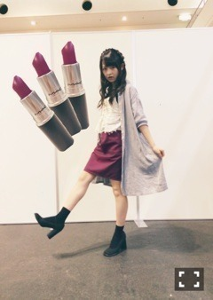
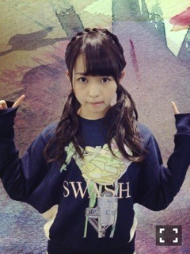
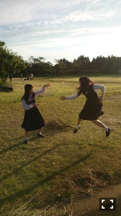

| 2014/09 15 Mon | ライト調整。601回目 |
京都個別握手会！
8月はツアーだったので
約1ヶ月ぶり？の握手だった！
1部、2部

ロングシャツ On y vua.
トップス ワンピースをカットしたもの
スカート used(Flower)
パンプス vintage(birthdeath)
持ってるMACの口紅と
全く同じ色のスカート。
この色ほんとに好きみたい。
靴もだいぶ履き慣れてきたよ〜
3部

スウェット SWASH LONDON
スカート Ray BEAMS
靴下 Dot＆Stripes
靴下に注目してくれる人が多かった。
可愛い靴下たくさん欲しい。
アンダーライブ、ツアーで
見てから注目してるよ！と
言ってくれてすごく嬉しかった。
10thも頑張るよ！
ライブとのぎ天とブログと...
別人で振り幅が広過ぎだと
ツッコまれました笑
だから一言では自分を表せない
というかまとまってなくて
扱いにくいのかなとか、
最近いろんなこと考えるけど
まあ、そこも良さかな、
と思うようにしています。

来てくださったみなさん
ありがとうございました！
何度目の青空か？MV
公開されました。
青春だなあ。
生徒としてちょこっと映ってます。
見つけられたかなー？

見て！飛鳥より顔が小さいよ！
すごいでしょ！ねえ！！
そのうしろの日芽香なんて豆粒よ！
のぎ天配信されました。
今度はアンダーライブに向けて修行！
住職さんは7thヒット祈願ぶりの
再会でした。
「十成昇坂」
シンプルですが、こんな思いを胸に。
ぜひ見てね〜
...
京ちゃん、里沙子の活動辞退、
寧々の卒業が発表されました。
寧々はアンダーライブが
最後の活動になります。
私のいちばんの理解者です。
だから、寧々のこといちばんに
理解したいと思っています。
アンダーライブの期間、
一緒に濃い時間をつくって
いきたいです！

まりか
コメント(618)
2014/09/15 14:00